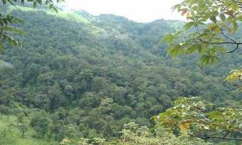
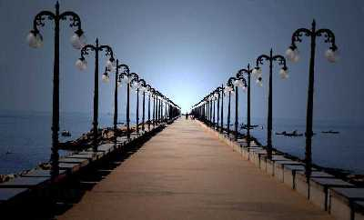

Kozhippara Falls
Easily accessible by roads, Kozhippara Falls are situated on the borders of Kakkadampoyil on the Malappuram -Calicut District divide. Providing a stunning sight, these falls are best known for its friendliness to swimmers and trekkers.
Thusharagiri Waterfall

Lying in the Western Ghats of Kozhikode district in Kerala, Thusharagiri Fall cascades down as three waterfalls. Located in a small tribal village, the name of the falls means ???snow covered mountains'. Trekkers and rock climbers will find trekking trails towards Lakkidi Ghat passing through thick foliage & lush, green surroundings offering its visitors a sheer delight.
Beypore
Beypore , an ancient port town in Kozhikode formerly called as Vaypura / Vadaparappanad. The famous ruler of Mysore , Tipu Sultan, named the town "Sultan Pattanam".Beypore port was historically famous for trading with the Middle East. It is one of the oldest ports in Kerala. (br) The place is also popular for building wooden ships, called as dhows in Malyalam, usually bought by Arab merchants for trading purposes but now used as tourist ships. It is also said that Sumerian ships might have been built in Beypore. Beypore used to have direct trade links with Mesopotamia since the time of silk route.
Sweet Street (Mithai Theravu)

A popular hub to gorge on sweet delectables, the Sweet Street is one of the busiest place to shop in Kozhikode. It remains open till 9 in the night.
Mananchira Square

Fed by a natural shower, Mananchira is a man-made freshwater pond surrounding which is the astounded complex, Mananchira Square. The pond was built in around 14th century as a bathing pool by the feudal ruler of Kozhikode, Zamorin Mana Vikrama whereas the Mananchira Square was opened in 1994. Previously, the Square was known as Manachira Maidan and was famous for football. It was a host of many matches as well. Today, it is an architectural glimpse in the middle of the city with its open theater, fabulous landscaped lawns, and musical fountains. Tourists visit here to spend a fantastic evening time amidst the meticulous beauty of park embellished with lush green trees. The serenity of the pristine water gives a soothing effect.
Peruvannamuzhi Dam
Situated 60 km off Kozhikode, the Peruvannamuzhi Dam is a beautiful place surrounded by verdant greenery. The reservoir here offers speed boat and row boat ride across the 'Smaraka Thottam' - a garden built in the memory of freedom fighters in the region. There is also a crocodile farm & bird sanctuary located a close to the dam for the wildlife lovers. The Dam is easily accessible by bus from Kozhikode.
Kozhikode Beach

Kozhikode Beach is also known as the Calicut Beach and is situated on the Malabar Coast. The beach road was named as 'Gandhi Road' after Mahatma Gandhi paid a visit to Calicut in 1934. The place has always been prominent for hosting public meetings. It has a long drive from Beypore in the south to Kappad in the north. The beach is ideal for witnessing the orange sunsets in Calicut. Also, the market near is a large shopping spot and attracts a lot of tourists.
Pazhassiraja Museum
Pazhassiraja Museum located on East Hill has been named after the great Pazhassiraja Kerala Varma of the Padinjare Kovilakom of the Kottayam Royal Family. The museum is famous for its various archaeological remains such as antique bronzes, ancient paintings and the historical umbrella stones etc.
Kappad Beach

Kerala is famous for its rivers, and their backwater inlets and Kappad does not disappoint if you want to experience these toHouseboatsats are available to reach Kappad through the backwaters to ensure that one enjoys every element that is true to Kerala and its roots. This beach is the place you want to be to experience culture, history and nature all at once. The silver sand, the drooping coconut trees that line the shore and the rocks that clash with the waves proves that Kappad abounds with untouched natural beauty. Along with the Pookat Lake and Kadalundi Bird Santuary, Kappad makes your visit to Kozhikode a completely enthralling and rejuvenating one.